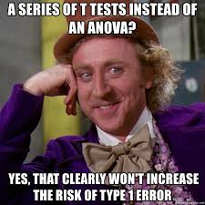

Sitzung 8
Wiederholung
Base R: ANOVA
Meme My Stats

Einleitendes
Die Varianzanalyse in R kann auf viele verschiedene Arten durchgeführt werden. Einige davon sind in base R enthalten, andere (idR komfortablere) werden durch externe Pakete zur Verfügung gestellt.
Ich zeige euch heute drei verschiedene davon:
Interlude: between und within
Beantwortet die unteren Fragen und gebt jeweils Beispiele (egal ob linguistischer Art oder nicht)
- Was bedeutet es, wenn ein Faktor within-subjects ist?
- Was ist mit between-subjects?
- Wie steht’s mit within-items?
- Und mit between-items?
Interlude: between und within
Beantwortet die unteren Fragen und gebt jeweils Beispiele (egal ob linguistischer Art oder nicht)
- Was bedeutet es, wenn ein Faktor within-subjects ist?
- Messung von Gedächtnisleistung: Jede Person einmal ausgeruht und einmal (an einem anderen Termin) nach einer durchzechten Nacht (außerdem Messwiederholung)
- Was ist mit between-subjects?
- Geschlecht; Placebo vs richtiges Medikament
- Wie steht’s mit within-items?
- Item immer in zwei Ausführungen: Einmal mit Scrambling, einmal ohne
- Und mit between-items?
- Itemset ist geteilt in Äußerungen mit Implikatur und Äußerungen ohne
aov()
Between-Design
Within-Design
Faktorinteraktion mit "*"
Messwiederholung (within-Design)
Messwiederholung (between-Design)
aov()
Mixed-Design mit Messwiederholung
Mixed-Design mit Messwiederholung und Interaktion
Übungen II
Stellt euch vor, ihr werdet beauftragt folgende Volksweisheit zu testen: “Bier auf Wein, das lass sein”. Was wäre ein geeignetes Experimentdesign und wie müsste die entprechende ANOVA aussehen?
Das erste Experiment liefert keine richtigen Ergebnisse. Euch kommt aber in den Sinn, dass der Spruch vielleicht von einem Mann stammt und der Rat daher vielleicht nur auf Männer zutrifft. Wie würdet ihr das testen und wie würde eine dazugehörige ANOVA aussehen?
Lösungen II
- Stellt euch vor, ihr werdet beauftragt folgende Volksweisheit zu testen: “Bier auf Wein, das lass sein”. Was wäre ein geeignetes Experimentdesign und wie müsste die entprechende ANOVA aussehen?
- Das erste Experiment liefert keine richtigen Ergebnisse. Euch kommt aber in den Sinn, dass der Spruch vielleicht von einem Mann stammt und der Rat daher vielleicht nur auf Männer zutrifft. Wie würdet ihr das testen und wie würde eine dazugehörige ANOVA aussehen?
Übungen III
- Lest die Datei „LungCapData.csv“ in R ein und verschafft euch einen Überblick über die Daten.
- Gibt es NAs?
- Berechnet, ob der Faktor einen signifikaten Einfluss auf die Lungenkapazität hat.
- Berechnet,ob der Faktor einen signifikaten Einfluss auf die Lungenkapazität hat.
- Berechnet, ob es eine Interaktion zwischen den Faktoren , für die über 18-Jährigen gibt.
- Berechnet, ob es eine Interaktion zwischen den Faktoren , und für die über 18-Jährigen gibt.
Lösungen III
- Lest die Datei „LungCapData.csv“ in R ein und verschafft euch einen Überblick über die Daten.
## LungCap Age Height Smoke Gender Caesarean
## 1 6.475 6 62.1 no male no
## 2 10.125 18 74.7 yes female no
## 3 9.550 16 69.7 no female yes
## 4 11.125 14 71.0 no male no
## 5 4.800 5 56.9 no male no
## 6 6.225 11 58.7 no female no## LungCap Age Height Smoke Gender
## Min. : 0.507 Min. : 3.00 Min. :45.30 no :648 female:358
## 1st Qu.: 6.150 1st Qu.: 9.00 1st Qu.:59.90 yes: 77 male :367
## Median : 8.000 Median :13.00 Median :65.40
## Mean : 7.863 Mean :12.33 Mean :64.84
## 3rd Qu.: 9.800 3rd Qu.:15.00 3rd Qu.:70.30
## Max. :14.675 Max. :19.00 Max. :81.80
## Caesarean
## no :561
## yes:164
##
##
##
## Lösungen III
- Gibt es NAs?
## LungCap Age Height Smoke Gender Caesarean
## 0 0 0 0 0 0## [1] LungCap Age Height Smoke Gender Caesarean
## <0 rows> (or 0-length row.names)Lösungen III
- Berechnet, ob der Faktor einen signifikaten Einfluss auf die Lungenkapazität hat.
## Df Sum Sq Mean Sq F value Pr(>F)
## Gender 1 148 147.96 21.47 0.00000426 ***
## Residuals 723 4983 6.89
## ---
## Signif. codes: 0 '***' 0.001 '**' 0.01 '*' 0.05 '.' 0.1 ' ' 1- Berechnet,ob der Faktor einen signifikaten Einfluss auf die Lungenkapazität hat.
## Df Sum Sq Mean Sq F value Pr(>F)
## Caesarean 1 2 2.331 0.329 0.567
## Residuals 723 5128 7.093Lösungen III
- Berechnet, ob es eine Interaktion zwischen den Faktoren , für die über 18-Jährigen gibt.
## Df Sum Sq Mean Sq F value Pr(>F)
## Caesarean 1 0.01 0.010 0.005 0.947
## Smoke 1 3.77 3.768 1.638 0.205
## Caesarean:Smoke 1 1.84 1.845 0.802 0.373
## Residuals 76 174.83 2.300- Berechnet, ob es eine Interaktion zwischen den Faktoren , und für die über 18-Jährigen gibt.
## Df Sum Sq Mean Sq F value Pr(>F)
## Caesarean 1 0.01 0.01 0.005 0.941257
## Smoke 1 3.77 3.77 1.981 0.163565
## Gender 1 31.78 31.78 16.710 0.000112 ***
## Caesarean:Smoke 1 1.98 1.98 1.039 0.311355
## Caesarean:Gender 1 2.73 2.73 1.437 0.234571
## Smoke:Gender 1 3.04 3.04 1.598 0.210287
## Caesarean:Smoke:Gender 1 0.23 0.23 0.120 0.730253
## Residuals 72 136.92 1.90
## ---
## Signif. codes: 0 '***' 0.001 '**' 0.01 '*' 0.05 '.' 0.1 ' ' 1Alternative ANOVA-Befehle
afex-ANOVA
Zur Erinnerung: Die Reihenfolge der positionalen Argumente könnt ihr nur dann ignorieren, wenn ihr sie benennt. Wenn ihr sie nicht benennt, müsst ihr die untere Abfolge einhalten. Allerdings ist euer Code besser nachvollziehbar (für Kollegen, Reviewer, etc.), wenn ihr alle Argumente per Schlüsselwort angegebt (und nicht bloß positional vorgeht).
ez-ANOVA
Übungen IV
Jetzt beschäftigen wir uns mit einem Experiment, das im psycholinguistischen Experimentalpraktikum entstanden ist. Das Design ist wie folgt:
*: 24 Items, 32 Proband*innen; jede*r Proband*in sah ein Item genau einmal unter einer Bedingung, und alle Bedingungen gleich oft. Zuordnung nach lateinischem Quadrat.
- Der Klempner wurde ins Gefängnis begleitet, weil er seine Mutter erschlagen hatte.
- Der Klempner wurde ins Gefängnis begleitet, weil ein Abwasserrohr geplatzt war.
- Der Klempner wurde zum Gefängnis begleitet, weil er seine Mutter erschlagen hatte.
- Der Klempner wurde zum Gefängnis begleitet, weil ein Abwasserrohr geplatzt war.
Lest die Datei “dzi.dat” ein, verschafft euch einen Überblick und berechnet die deskriptive Statistik und die richtige ANOVA in drei Ausführungen: base R, afex und ez.
Lösungen IV
Datei einlesen
Überblick verschaffen
## gender age fach subject variant experiment item condition
## 1 m 19 LADe-EngPhilologie 1 1 1 6 b
## 2 m 19 LADe-EngPhilologie 1 1 1 14 b
## 3 m 19 LADe-EngPhilologie 1 1 1 13 a
## 4 m 19 LADe-EngPhilologie 1 1 1 12 d
## 5 m 19 LADe-EngPhilologie 1 1 1 15 b
## 6 m 19 LADe-EngPhilologie 1 1 1 7 c
## judgement verb gen prep
## 1 7 passive episodic ins
## 2 7 passive episodic ins
## 3 7 passive generic ins
## 4 7 modal episodic zum
## 5 7 passive episodic ins
## 6 7 modal generic zumLösungen IV
## gender age fach subject variant
## m:168 Min. :18.0 De-Gesch :114 Min. : 1.0 Min. :1.00
## w:426 1st Qu.:19.0 WiPaed : 95 1st Qu.: 8.0 1st Qu.:2.00
## Median :20.0 LADe-Sport : 54 Median :16.0 Median :4.00
## Mean :21.4 De : 38 Mean :16.4 Mean :4.47
## 3rd Qu.:21.0 LADe-Gesch : 27 3rd Qu.:25.0 3rd Qu.:7.00
## Max. :33.0 De-AllgSprachw: 19 Max. :32.0 Max. :8.00
## (Other) :247
## experiment item condition judgement verb
## Min. :1 Min. : 1.00 a:148 Min. :1.000 modal :314
## 1st Qu.:1 1st Qu.: 5.00 b:150 1st Qu.:5.000 passive:280
## Median :1 Median :12.00 c:146 Median :7.000
## Mean :1 Mean :11.54 d:150 Mean :5.944
## 3rd Qu.:1 3rd Qu.:18.00 3rd Qu.:7.000
## Max. :1 Max. :23.00 Max. :7.000
##
## gen prep
## episodic:300 ins:298
## generic :294 zum:296
##
##
##
##
## Lösungen IV
## [1] gender age fach subject variant experiment
## [7] item condition judgement verb gen prep
## <0 rows> (or 0-length row.names)## 'data.frame': 594 obs. of 12 variables:
## $ gender : Factor w/ 2 levels "m","w": 1 1 1 1 1 1 1 1 1 1 ...
## $ age : int 19 19 19 19 19 19 19 19 19 19 ...
## $ fach : Factor w/ 19 levels "De","De-AllgSprachw",..: 11 11 11 11 11 11 11 11 11 11 ...
## $ subject : int 1 1 1 1 1 1 1 1 1 1 ...
## $ variant : int 1 1 1 1 1 1 1 1 1 1 ...
## $ experiment: int 1 1 1 1 1 1 1 1 1 1 ...
## $ item : int 6 14 13 12 15 7 22 11 16 4 ...
## $ condition : Factor w/ 4 levels "a","b","c","d": 2 2 1 4 2 3 3 3 3 4 ...
## $ judgement : int 7 7 7 7 7 7 7 7 7 7 ...
## $ verb : Factor w/ 2 levels "modal","passive": 2 2 2 1 2 1 2 1 2 1 ...
## $ gen : Factor w/ 2 levels "episodic","generic": 1 1 2 1 1 2 2 2 2 1 ...
## $ prep : Factor w/ 2 levels "ins","zum": 1 1 1 2 1 2 2 2 2 2 ...Lösungen IV
Deskriptive Statistik
## item group1 group2 vars n mean sd median trimmed mad min max range
## X11 1 episodic ins 1 150 5.55 1.85 6 5.87 1.48 1 7 6
## X12 2 generic ins 1 148 6.11 1.26 7 6.35 0.00 2 7 5
## X13 3 episodic zum 1 150 6.08 1.34 7 6.35 0.00 1 7 6
## X14 4 generic zum 1 146 6.04 1.39 7 6.32 0.00 1 7 6
## skew kurtosis se
## X11 -1.11 -0.03 0.15
## X12 -1.42 1.07 0.10
## X13 -1.61 2.20 0.11
## X14 -1.53 1.64 0.11Lösungen IV
Base R
Lösungen IV
Base R
##
## Error: subject
## Df Sum Sq Mean Sq F value Pr(>F)
## prep 1 5.4 5.428 0.412 0.526
## gen 1 12.8 12.754 0.967 0.334
## prep:gen 1 2.7 2.707 0.205 0.654
## Residuals 28 369.2 13.187
##
## Error: subject:prep
## Df Sum Sq Mean Sq F value Pr(>F)
## prep 1 6.79 6.795 3.630 0.0667 .
## gen 1 0.30 0.302 0.161 0.6908
## prep:gen 1 0.00 0.002 0.001 0.9758
## Residuals 29 54.29 1.872
## ---
## Signif. codes: 0 '***' 0.001 '**' 0.01 '*' 0.05 '.' 0.1 ' ' 1
##
## Error: subject:gen
## Df Sum Sq Mean Sq F value Pr(>F)
## gen 1 11.56 11.555 8.426 0.00687 **
## prep:gen 1 12.72 12.715 9.272 0.00481 **
## Residuals 30 41.14 1.371
## ---
## Signif. codes: 0 '***' 0.001 '**' 0.01 '*' 0.05 '.' 0.1 ' ' 1
##
## Error: subject:prep:gen
## Df Sum Sq Mean Sq F value Pr(>F)
## prep:gen 1 10.93 10.929 4.563 0.0407 *
## Residuals 31 74.24 2.395
## ---
## Signif. codes: 0 '***' 0.001 '**' 0.01 '*' 0.05 '.' 0.1 ' ' 1
##
## Error: Within
## Df Sum Sq Mean Sq F value Pr(>F)
## Residuals 466 721.1 1.547##
## Error: item
## Df Sum Sq Mean Sq F value Pr(>F)
## prep 1 2.55 2.554 0.638 0.4369
## gen 1 5.47 5.471 1.367 0.2607
## prep:gen 1 22.72 22.718 5.674 0.0309 *
## Residuals 15 60.06 4.004
## ---
## Signif. codes: 0 '***' 0.001 '**' 0.01 '*' 0.05 '.' 0.1 ' ' 1
##
## Error: item:prep
## Df Sum Sq Mean Sq F value Pr(>F)
## prep 1 7.77 7.767 3.603 0.0759 .
## gen 1 10.85 10.854 5.035 0.0393 *
## prep:gen 1 1.99 1.986 0.921 0.3514
## Residuals 16 34.49 2.156
## ---
## Signif. codes: 0 '***' 0.001 '**' 0.01 '*' 0.05 '.' 0.1 ' ' 1
##
## Error: item:gen
## Df Sum Sq Mean Sq F value Pr(>F)
## gen 1 10.33 10.329 2.462 0.135
## prep:gen 1 0.87 0.872 0.208 0.654
## Residuals 17 71.32 4.195
##
## Error: item:prep:gen
## Df Sum Sq Mean Sq F value Pr(>F)
## prep:gen 1 13.12 13.118 8.933 0.00787 **
## Residuals 18 26.43 1.468
## ---
## Signif. codes: 0 '***' 0.001 '**' 0.01 '*' 0.05 '.' 0.1 ' ' 1
##
## Error: Within
## Df Sum Sq Mean Sq F value Pr(>F)
## Residuals 518 1055 2.037Lösungen IV
afex
## Anova Table (Type 3 tests)
##
## Response: judgement
## Effect df MSE F ges p.value
## 1 gen 1, 31 0.30 9.07 ** .02 .005
## 2 prep 1, 31 0.37 4.64 * .01 .04
## 3 gen:prep 1, 31 0.52 4.85 * .02 .04
## ---
## Signif. codes: 0 '***' 0.001 '**' 0.01 '*' 0.05 '+' 0.1 ' ' 1## Anova Table (Type 3 tests)
##
## Response: judgement
## Effect df MSE F ges p.value
## 1 gen 1, 18 0.52 2.57 .04 .13
## 2 prep 1, 18 0.34 2.69 .03 .12
## 3 gen:prep 1, 18 0.19 9.09 ** .05 .007
## ---
## Signif. codes: 0 '***' 0.001 '**' 0.01 '*' 0.05 '+' 0.1 ' ' 1Lösungen IV
ez
## $ANOVA
## Effect DFn DFd F p p<.05 ges
## 2 prep 1 31 4.641385 0.039094646 * 0.01370960
## 3 gen 1 31 9.073004 0.005128325 * 0.02213167
## 4 prep:gen 1 31 4.852868 0.035162122 * 0.02039948## $ANOVA
## Effect DFn DFd F p p<.05 ges
## 2 prep 1 18 2.694220 0.118069072 0.02947056
## 3 gen 1 18 2.574507 0.125999408 0.04226753
## 4 prep:gen 1 18 9.087690 0.007445464 * 0.05379394Nur Kurz: Plots
Ein Plot zum Abschluss
library(ggplot2)
p <- ggplot(data = d, aes(y = judgement, x = prep, shape = gen,
color = gen, group = gen)) +
stat_summary(fun.y = mean, geom = "line") +
stat_summary(fun.y = mean, geom = "point") +
stat_summary(fun.data = mean_se, geom = "errorbar",
width = 0.2, alpha = .5, linetype = 1) +
labs(y = "Mean Rating [1..7]", x = "Preposition",
shape = "Reading", color = "Reading")Zum Nachdenken
Wie könnte man das folgende Meme in ein Experiment übersetzen? Wie sähe der Versuchsaufbau und wie die afex-ANOVA dazu aus?
Der Glühwein ruft
Beste Grüße und bis nächste Woche!